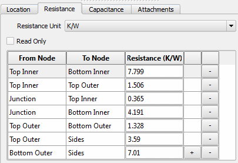

The
thermal resistances between pairs of nodes in a network assembly
are specified in table format.
Procedure
- Open the Resistance tab
of the Network Assembly property sheet.
- Select the units of resistance
that you are going to enter.
- Make sure that Read Only is
unchecked.
The Resistance Table is underneath
this check box and consists of three columns which identify two
nodes and define the resistance between them.
- Click the
selection arrow of a cell in the From Node column and choose the
start node from the dropdown menu.
- Click the selection arrow
of the corresponding To Node column and choose the end node.
- Click the selection arrow
of the corresponding Resistance cell and edit the default value.
By default, the resistance
is set to 1.0 × 1010 K/W.
- Continue, as required, to
add or delete resistances by clicking the “+” or “−” button respectively.
Results
Figure 1 shows an example of a completed resistance table.
Figure 1. Network Assembly Node
Resistances Example